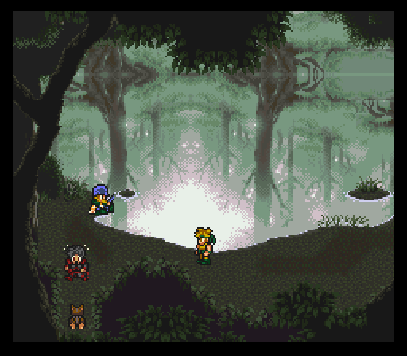
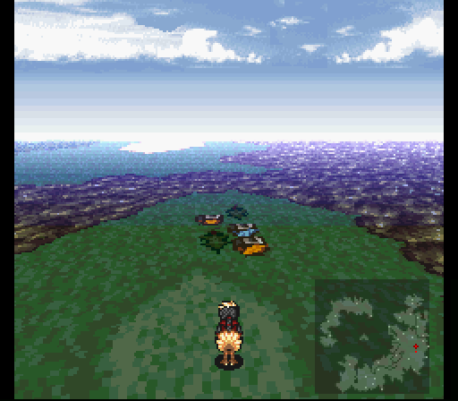

Part 11: Dude, Where's My Aurora?
In search of Aurora
After getting shuttled to the east via Durandal Castle, the first destination is Quartz Village. When you exit the castle, just go northeast through the desert and you'll find the village next to a big forest.
New monsters around these parts:
- Sandworm - Found in the desert, these Sandworms (from the Beetlejuice movie) are not only dangerous physically, but also with Sandstorm (wind elemental, inflicts darkness), which they use normally as well as counter Magic or Aether with. Their special attack, Crunch, has the potential to one-shot a character. Thankfully they are rather slow and can be slowed down even more by casting *surprise* Slow on them. They have a Titan Claw as a rare drop and yield a decent amount of exp.
- Alpha Wolf - Uses physical attacks and Drain.
- Red Bat - Uses Energy Blade when last monster alive.

Quartz Village is a completely optional town to explore for the usual goodies hidden everywhere. Besides Scrolls and Mythril Shields, there's nothing really noteworthy in the shops, but at the inn/pub we once again meet Oboro, who's willing to join our party for the going rate of 3k gil. But only if the party isn't already full. Meaning one would need to go back to Fraust and free up a character spot in order to hire Oboro if they already have four party members. Since I had reserved a spot for him in advance, I gladly make a deal and now we have Oboro back on our team...along with any equipment and relics he kept from the last time.
At any point now that Oboro is in your party, you can randomly view his dream flashbacks by sleeping at any inn. There are four in total.
In the southwest part of town is a kid that wants to play Rock-Paper-Scissors. Choose correctly and you win 100 gil. Do so FIVE times in a row and you'll get the RPS Badge. Hello Xenogears reference! You'll also be instantly granted a level up to all the current party members for your efforts. Be sure to re-visit Ruta Village later on and talk to the boy running around the flowers as he notices the party has the RPS Badge and gives you a 'Rare Candy', which gives the party another level up!


In the northwest part of town is a vacant house, one that just so happens to be related to Cloud. Bringing him inside triggers a cutscene showing how his closest friend got killed. Yes, his closest friend is Aerith and she did indeed get taken down by clown man Kefka. She put up a hell of a fight though.
Speaking of Aerith, there's a man by the name of Jasper in the northeastern house. His specialty? Preserving corpses. His current corpse like figure is none other than Aerith, done at the request of Cloud. Clearly he's got a plan, but good luck seeing that one play out right now. Grab a Thunder Rod in a chest by way of the back door.
Finally, there's a hidden path behind Jasper's house to a peaceful pond. There's a dog guarding the only other exit out and he's not gonna budge from his spot just yet. We'll be back here soon though. The people back in town mention that a strange creature came flying through here, then took off northeast, toward Sunfall City. So that's where we'll be heading.
Note: The forested area north of Quartz (the 'Bomb Forest' of this mod) has an abundance of Napalm monsters and a rare encounter of a single Hellspawn that is quite a lot stronger than the other monsters in the area. There is no real incentive to fight them in terms of item drops or steals, but the Hellspawns do give a very nice amount of exp.
When you're done exploring the area, head back to the overworld. The Hermit's Hideaway is to the southeast of town, but all that's there is a few scattered items and an old guy who says to come back later.

Back on the overworld, stick to the ocean to the east as you go north. You'll run into two destinations of note with the first being the Coliseum. But as our luck would have it the bridge allowing access to it is out... We'll be coming back here later as well.
New monsters in this area:
- Putty - These iconic enemies from Power Rangers use physical attacks and haphazardly steal your gil, then flee. They'll use Stone and Thunder Fist if they're the last monster alive.
- Cazador - Arguably the most annoying enemies from the Fallout series. Here they come in large groups, have their renowned venomous attack, and will use Razor Leaf if there is just one remaining. Kill them with fire! Or wind.
- May Fly - Rare encounter. Uses spells from Drain to Air Blast and even Break. It's special attack, Osmosis, takes away mp. After a certain amount of time, and if it's the only monster left, it'll use Plague and Wind Slash. It's weak to ice and wind.
- Mandragora - Located in forested areas. We fought these guys earlier as a mini-boss on Mt. Zephyr. Cloud can now easily cut through them like butter with his Vendetta, along with a Vambrace and Power Glove of course.
Tip: Most flying-type monsters in this mod are weak to the element of wind.
Not much farther north from the Coliseum is Sunfall City. I save outside because my first destination is a house to the northwest of the armor shop. Inside is a woman on the floor and a lovely little Metroid that's invaded the woman's home and needs to be taught a lesson.

The Metroid only seems to do single target strikes, but it's done some serious training in its native universe because the physical strike basically one shot my frontliners WITH buffs up. It can also drain hp and transfer it back to itself via Feed or Drain. It's quite obvious that this beast is not meant to be dealt with so soon, but we'll just see about that...
The problem? Metroids absolutely hate being struck by ice. Tifa just so happens to be packing two weapons attuned to that element. As such, she's full on attacking every turn she gets. The Metroid's got a pretty beefy 10k hp pool to chew through.
Cloud likewise is in the front row. He just spams his level 4 limit Omnislash over and over. The others are in the back row and get Safe cast on them.
This fight went way better than I was expecting simply because Tifa put in some serious damage work. Double weapon procs on her first turn, then the Metroid using Drain to just barely not take out Tifa. She was queued up to attack and launched her desperation move Atomic Drop for a massive 3k damage.

Once the Metroid goes down (not before Oboro swiped a valuable Tincture from it though), the woman hands over a Mermaid Rod. Another elemental rod affair, this one being attuned to water with a water based proc as well.
As for the shops in town, the relic shop finally has buyable Oracle Rings and Power Gloves which is where most of my gil goes to. The armor shop has Tiger Masks for our fighters and previously featured mithril gear, while the weapon shop has Throwing Knives for Oboro and Arc.

There's also an odd fellow that will offer to sell you an 'Insanity Pepper' towards the north-west part of town, for just one gil. If you are brave enough to accept this deal, your character will begin to trip out and enter a dream-like desert maze of sorts. Just follow the sound of the 'chime' from screen to screen until you figure out the pattern and break the seal, where you will encounter...an Alakazam! Who is apparently your spirit guide... Still with me? At the end of this hallucination the party will wake up back in town and be granted a level up for their spiritual journey. The strange NPC however is now nowhere to be seen... Huh.
An NPC mentions that the bridge to the Coliseum was destroyed by an earthquake, and that repairs are indeed on the way. Other than that, there's nothing jaw-dropping except for a beach area to the east of the chocobo hut with a hidden giant sum of gil in the rock in the middle of the area. There's also a mansion/art house and a church/auction house, but there's nothing we can do at these places for now. The townsfolk mention that they saw Aurora fly off to a certain Rogue City, where apparently demonic monsters have taken up residence. Lovely.

Easter egg: If you wait for a while on the beach, a crab will walk out from the bottom-left of the screen for a few seconds.
When you're done messing around, Rogue City is due west of town, but you'll have to detour north to get around the sinuous mountains and reach it. You'd be wise to rent a chocobo and ride there in style.
Rogue City
Welcome to Rogue City! The weather is great and the people are friendly! It doesn't get any better than this... Right? I'm afraid that nothing could be further from the truth. This place somehow became even more creepy in this mod. What, with the skulls and arms sticking out of the ground, and the lightning flashes... It's great, I love it!
As for exploring Rogue City, the enemies do force you to be on your toes. Outside we have:
- Gremlins - They'll come in packs of four and potentially use Acid Rain. But mostly it's regular attacks and Energy Web. Oh, and they like to steal your gil also...thieving bastards.
- Archdaemons - They inherently have haste and are capable of chaining together weak elemental spells. They'll cast Black Shock or Timebomb and use buffs on themselves and their friends, including Reraise which brings them back to life once dead. They also have a chance to counter Throw or Havoc with Soul Rip and they tend to be accompanied by a pair of Zombies.
- Tormentors - These guys hit like a truck and have a lot hp and defense, but the real danger with them is Magnitude Eight, which is a strong earth-type spell. Besides using it normally, they have a chance to use it upon death... so don't let your hp fall too low before they perish. The Angel Pendant relic will protect one lucky character from it at least thanks to Float. They're weak to poison and can be poisoned, so if Serin is in your party use Poison Nova.
- Uridezu and Vermins - A rare encounter and not very dangerous. We'll be seeing more of them later.


And inside:
- Harlot - These ladies of the night always come with some form of backup, whether it's Moblin, Gremlin, or even Putty. They have a high magic stat, so their spells can definitely hurt if not mitigated by Mystic Rings, especially the formation with two of them. They have Vendettas as a rare steal, but be careful when Throwing or Stealing from them as they can counter both by using either Confuse or Charm, the latter of which is a really nasty spell that makes the target attack their own allies.
- Spookly - A rare encounter and is a whole lot higher in level than the other monsters around here, but by itself it's not very threatening. It will however throw a War Machete on its third turn, so try to kill it before then! It can counter Magic or Combo with Dread Gaze.

Check the skulls and boxes around outside for items, the most noteable being a Necronomicon way in the back, and a Might Tab to the west of that. Unfortunately step-healing does not work outside, thanks to the acid rain... but on the plus side, there's some nice rare steals from a few enemies. Archdaemons have Monk's Belts (allows the wearer to randomly counterattack) while Tormentors have Power Gloves. Archdaemons can also drop Mystic Rings. And as mentioned Harlots have Vendettas, which make for great throwing items against human or plant-type enemies.
This area is pretty linear, but there's a few detours at the start. There's a building next to a tonberry in the north with a clock puzzle. If you enter the time of 4:20:10, you'll gain access to a chest with a new Aether for Serin, Nanoflare. Only single target, but it's fire elemental and quite potent on the damage front.
To the west of the tonberry you'll find a sentient magitek armor running about. Run into it now and you'll likely die instantly (and the same if you interact with the tonberry). More importantly is a building with a music player of sorts and a red skeleton blocking a chest. When you place the Spooky Record on the player, the skeleton comes to life, two ghosts show up and an epic dance battle ensues, followed by an actual battle.
This skeleton is known as Meat and can actually be a little on the scary side. Its physicals pack a punch and it has some annoying attacks to watch for. Dread Gaze petrifies, but the real annoyance comes from its level based attacks which connect if the target's level is a multiple of whatever skill is used. This pile of bones has Level 3 Confuse, Level 4 Flare, and Level 5 Death. This is why I needed Oboro up one level before I started doing things here because he'd be killed instantly by Lv4 Flare and Lv5 Death. The Ghosts, while rather benign by this point, should be killed first because they can confuse party members with their Wild Touch special attack.
Upon destroying the skeletal figure, you'll get one of its femur bones and the Blunderbuss from the chest it was guarding. The Blunderbuss is a nice ranged weapon that Serin can utilize, but that bone can be used right away.
Note: Since the cranes that allowed you to descend were removed in this mod, if at any point you need to leave this place, if Tifa's in your party just use Teleport. If she is not, in order to get past all the NPCs that move in a line and block your way, when you enter that room immediately move to the right and pass by the first two NPCs, then stop right before reaching the bottom and let the NPCs stack up a bit, then move back and forward quickly to let one pass so you can sneak past them.

After exploring the rest of Rogue City's northwest zone, I'm back at Quartz Village. That dog blocking an exit behind Jasper's house can be persuaded to move with the bone, allowing you to reach a barrel that has another Aether for Serin, Catastrophe. Another single target attack affair, but is as strong as Nanoflare and non-elemental. This would make it almost always superior, but there's a chance the attack is replaced with one that either kills the target instantly or misses. Still very nice to use for normal battles though.
Back in Rogue City, we go into the bottom-left building with a relic shop sign on it and jump between the two buildings as we make our way up. There's a Thief Knife in a chest, and another pair of Thief Gloves (relic) hidden inside a pot in the room below a depressed zombie standing outside. If you need to replenish any supplies just talk to the plague doctor merchant who speaks like the shady, unnamed merchant in Resident Evil 4. There's not much else to mention besides a couple chests, but one of them near the boss of the area contains something very nice, a Blazing Claw. Strong weapon, fire elemental, and can cast Fireball for a bit of extra damage. This goes to Tifa and...let's just say the next boss isn't going to like fire.
New power
Time to reach the top of this area, but there's a problem...a giant hulking beast known as Sasquatch guarding the last door.

Sasquatch hits hard and probably has some dangerous skills, but here's the problem with that...it's weak to fire. I have three people who can hit that weakness in Tifa's Blazing Claw, Serin's Nanoflare, and Oboro tossing Fire Scrolls. Even with its healing and defensive buff granting after losing some health, it's not enough to save the beast from getting pasted very quickly.
If he (assuming it's a male sasquatch) could've survived for long enough, at some point he'd call in some generic enemy subordinates and use Jump. Besides a few ice-themed attacks like Snowball, Frost Bite and Freeze, he can use Shock Wave, Acid Rain, and his special attack called Bone-Slamma!!! which does 2x damage. His other main schtick is to 1/3 chance counter the majority of skills with something, such as Magic or Havoc with Ice, Throw with throwing an Iron Sword or Shamshir right back, Aether with Stone, Combo with Shock Wave, and Limit with Energy Web. So it's like I said, if I didn't immediately obliterate him with fire-type attacks, I'm sure things would have played out differently.
Inside the next room, there's a Golden Apple, Magic Tab, and Aurora lying in bed. Interacting with her triggers an appearance by an esper, Ramuh. Long story short, there is a way to help Aurora come to grips with her newfound form and that's to free some of Ramuh's kind from the Empire's Magitek Research Facility.
To assist in that endeavor, Ramuh turns himself into Magicite and brings out a few others to assist as well. Those three are a King Tonberry, Spiky Tiger (from Secret of Mana), and even vanilla FF6's own Terra. The significant spells you can learn from these espers are Storm and Cura from Ramuh, and Levitate from King Tonberry. With Levitate you can avoid some nasty spells, such as Quake or Magnitude Eight. Spiky Tiger's Mute and Slow are always useful as well.

As for summoning them in battle, Spiky Tiger is particularly helpful because it casts regen on the entire party. And Ramuh is of course the strongest of the lot and will come in extra handy later on against mechanized enemies.
One major change with espers...in a similar vein to another FF6 mod Brave New World, characters can only equip specific espers. It'll make forming strategies in the late game more interesting for me, that's for sure. Something else to note, in the esper menu, a star icon will show up next to an esper's name once that character has learned all of its spells.
When you're ready to go, head south to find your other party members. As you go back down the stairs during a cutscene, the next issue arises...how to get to the mainland where the Empire's capital, Ornyx, lies. We'll have to go over to Sunfall City and see if we can find any clues for that. If you had Oboro on your team he will now call it a day and take off.
As for choosing a new party, we are forced to have Cloud and Tifa, so besides them I pick Serin and Ronan. Avalon and Arc will continue to ride the bench. So I equip the newly acquired Magicite (Terra to Tifa, King Tonberry to Ronan, Spiky Tiger to Cloud, and Ramuh to Serin) and head back to Sunfall City.